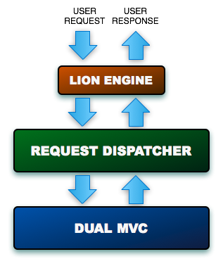
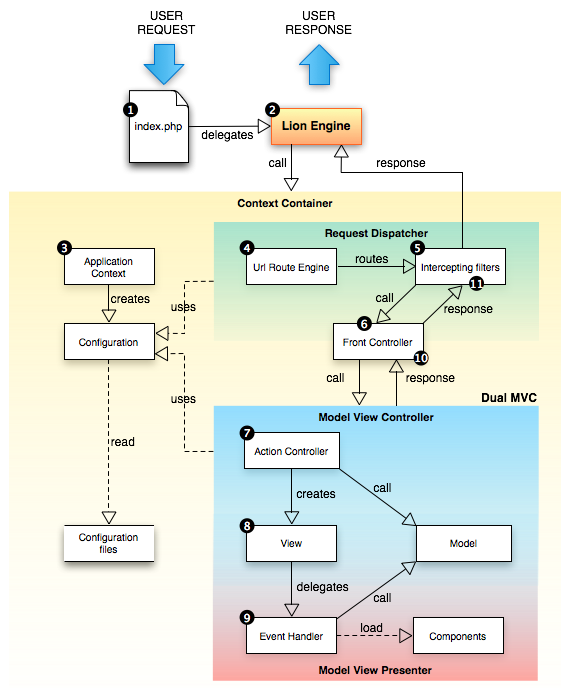

<table cellpadding="10" cellspacing="0" width="100%" border="0"><tr><td valign="top">
<div><a name=""></a><h1>Lion Execution Flow</h1>
  <div class="ref-purpose">How client requests are driven</div>
 <div class="ref-synopsis"></div>
<h2>Table of Contents</h2>
<ul>

<a href="../Lion/tutorial_Lion.ExecutionFlow.pkg.html#introduction">Introduction</a><br />

<a href="../Lion/tutorial_Lion.ExecutionFlow.pkg.html#basic_lifecycle">Basic life-cycle</a><br />
</ul>

 <p></p>
 <span><a name="introduction"></a><h2>Introduction</h2><p>A Lion application needs to include an special class to launch the rest of the framework in each request: <strong>The Lion Engine</strong>.<br />
  To include the Lion Engine, we just need to include the file <strong>lion.php</strong> located in the root directory within the lion distribution.</p>
  <p>At the same time, there are 3 main parts of the framework architecture that are involved in every request: The <strong>Context Container</strong>, the <strong>Request Dispatcher</strong> and the <strong>Dual-MVC</strong>.</p>
  <p>The Context Container represents the application itself as an space where all our application instances <i>live</i> in. It's loaded by the Lion Engine and used by the rest of the framework to discover all the instances involved in a request.</p>
  <p>The execution sequence order is, at the very top level, as shown in the following image:</p>
  <p></p>
  <ol><li>The request is routed to the Lion Engine. The Lion Engine loads the Context Container and delegates to the Request Dispatcher.</li>
    <li>The Request Dispatcher resolves some of the classes involved in the request, executes some logic and delegates to the Dual-MVC.</li>
    <li>The Dual-MVC executes the logic itself to create a response in answer to the given request. Finally, the response is returned through upper layers.</li></ol></span>
 <span><a name="basic_lifecycle"></a><h2>Basic life-cycle</h2><p>Now, let's zoom a little bit the execution sequence explained above:</p>
  <p></p>
  <ol><li>The request arrives to our <strong>index.php</strong>. The index.php does not belong to lion framework but to our application. It includes the Lion Engine in which delegates the execution to.</li>
    <div class="messagebox floatnote metadata plainlinks"><div class="floatnoteicon"></div><br>Note that we must redirect all the request to the index.php file. Lion applications contains a <strong>.htaccess</strong> prepared to do that out of the box.<br />
    The URL route engine of Lion will route the request to a controller or the other one depending on the URL.</div>
    <li>The index.php includes de <strong>lion.php</strong> file in which delegates to. As explained below, lion.php contains the Lion Engine.</li>
    <li>The Lion engine initializes the <strong>Application Context</strong> in which the rest of our application instances are contained in. Once the application context has been started-up, it loads the configuration which will be used to setup the rest of the instances.</li>
    <li>Once the Application Context has been initialized, the request is sent to the <strong>Url Route Engine</strong> which is the component in charge of parse the incoming request URL and determine the best route to redirect the request to. A route is basically the combination of the following information:
      <ul><li>The intercepting filters to be executed to.</li>
        <li>The front controller to handle the request to.</li>
        <li>The controller to handle the request.</li>
        <li>The parameters to be added to the request (or modified) previous to call the controller.</li></ul></li>
    <li>After the route is resolved, the request is intercepted by the <strong>filters</strong> associated to it. Filters have logic to be executed before and after calling the front controller.</li>
    <li>Once the filters has been executed, the <strong>Front Controller</strong> get the control. The front controller contains generic logic associated to each kind of request. i.e. the <a href="../FrontController/__HttpFrontController.html">__HttpFrontController</a> contains logic associated to HTTP incoming requests while the <a href="../FrontController/__CommandLineFrontController.html">__CommandLineFrontController</a> contains logic associated to command line executions.</li>
    <li>The front controller delegates to the Dual-MVC. In that sense, an <strong>Action Controller</strong> is resolved to attend the request. The Action Controller is a class usually representing the requested page (in a web environment) which usually retrieves a portion from the Model to send to the view, according to the MVC pattern.</li>
    <li>Finally, the controller returns the control to the <strong>view</strong>. The view is the MVC piece in charge of rendering the user interface, it is, how the information will be shown to the user.</li>
    <li>While the view is being executed, the <strong>Event Handler</strong> associated to it will be called. In that sense, the view delegates to the Event Handler in order to perform some operations associated basically to user interface controls. The Event Handler will be also able to access to the Model for his own purposes, like the Action Controller.</li>
    <li>Finally, the rendered view will be returned as part of the response to the <strong>Front Controller</strong>.</li>
    <li>The Front Controller at the same time returns the response to the upper layer, being executed again all the filters associated to the current route.</li></ol></span></div>
      </td></tr></table>